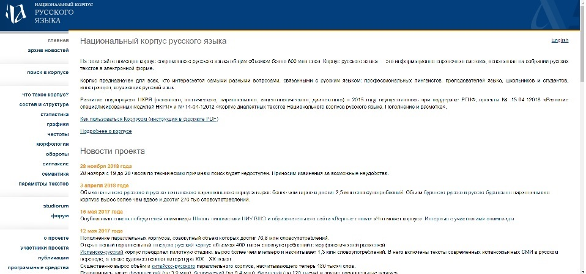

Домашнее задание по Цифровой Грамотности
Фомичева Виктория Валерьевна
Место учебы: НИУ ВШЭ, ФГН, Школа Филологии
Научные интересы и немного себе: увлекаюсь кинематографом и хочу трудоустроиться в этой сфере
Как современные технологии могут помочь филологу
В XXI веке любой человек должен хорошо разбираться в современных технологиях, так как они играют большую роль в современных исследованиях. Любой филолог в основном работает с текстами – а делать это с помощью компьютера гораздо проще: вместо поисков в нескольких библиотеках даже очень старый текст можно легко найти в онлайн-архивах. Более того, найти, например, какое-то ключевое слово в тексте с помощью компьютера можно за две секунды, в то время как вручную на это могут потребоваться часы кропотливой работы.
Анализ сайта Национальный корпус русского языка
Ссылка на НКРЯ

С НКРЯ приходилось хотя бы раз работать каждому филологу. И почти каждый сталкивался с определенными трудностями при работе с ним.
Несомненным плюсом является широкий функционал сайта и возможность очень расширенного поиска, где можно уточнить практически любой параметр, который придет в голову. Однако отсюда вытекает и главный минус: при таком огромном количестве параметров интерфейс оставляет желать лучшего, поэтому разобраться с ними неопытному пользователю очень трудно. Кроме того, все оформление сайта устроено так, что очень трудно отделить важную информацию от второстепенной, пользователь не может сфокусироваться на чем-то конкретном, глаза разбегаются от излишнего количества текста на странице.